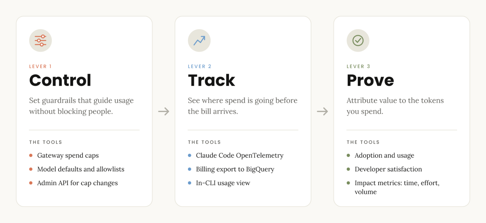
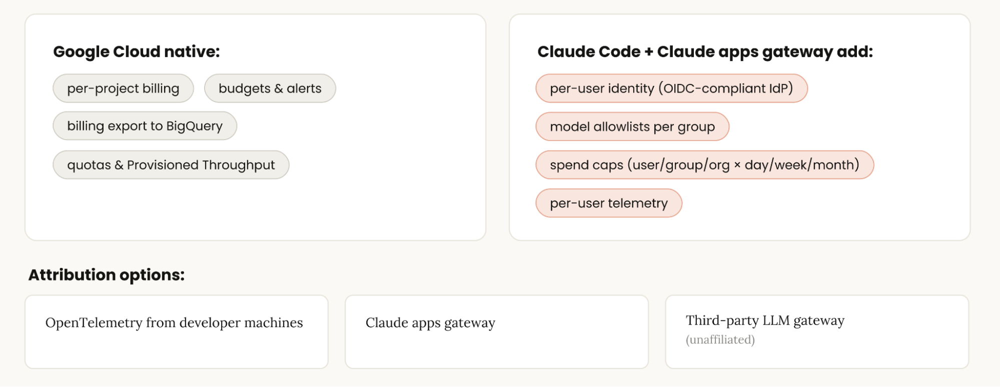
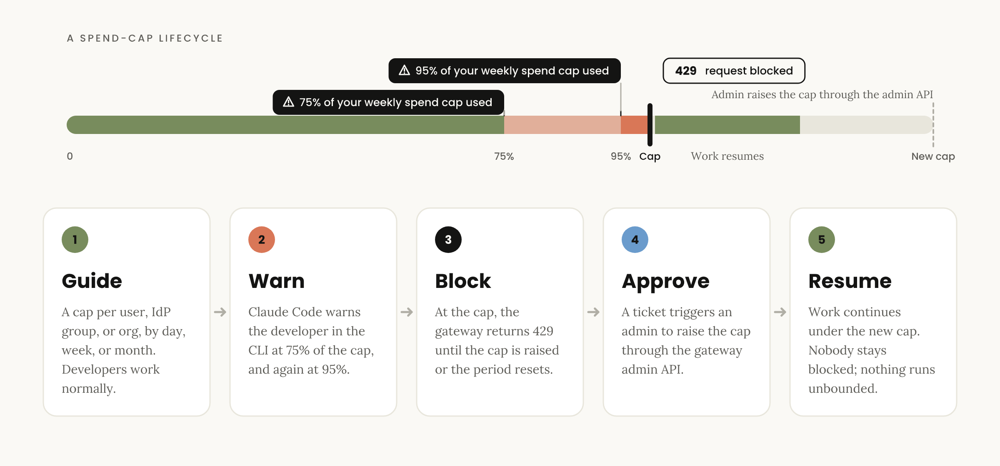
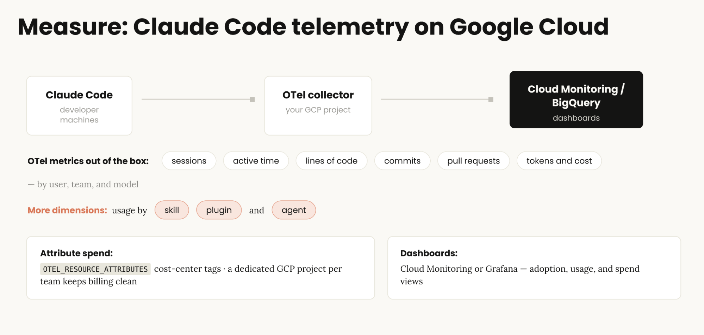
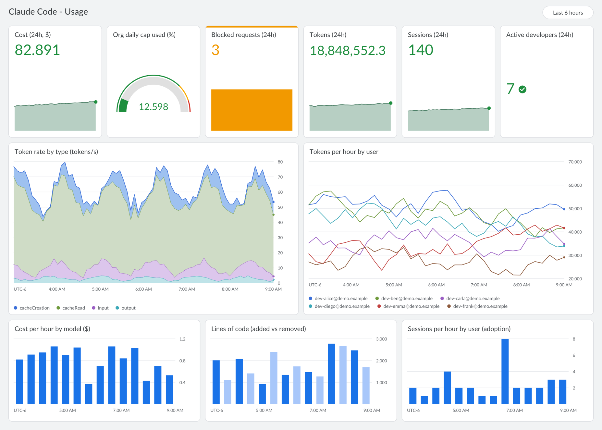
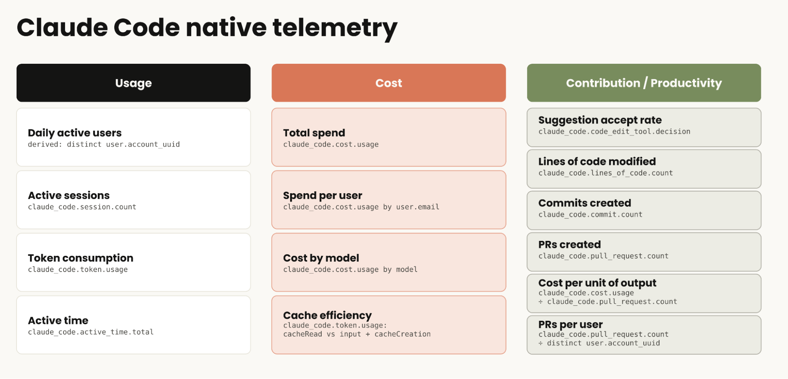
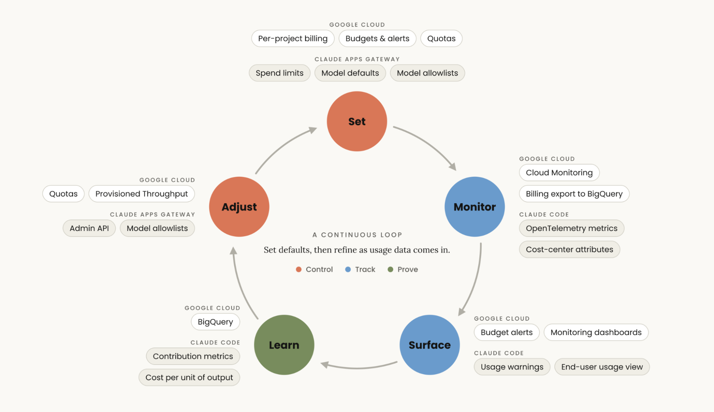

Google Cloud에서 Claude Code 비용을 관리하고 투자 수익(ROI, return on investment)을 측정하기 위한 모범 사례.
조직이 Claude Code에 더 많은 일을 맡길수록 지출도 함께 늘어나고, 플랫폼 팀에는 비용을 통제하면서 그 효과도 파악할 방법이 필요해진다. Google Cloud와 함께한 최근 웨비나에서 착안해, Claude Code를 쓰는 조직이 Google Cloud에서 이런 요소를 더 잘 추적하고 최적화하는 방법을 소개한다. 핵심 레버는 세 가지, 통제(control)·추적(track)·입증(prove)이다.
Google Cloud의 Claude는 사용량 기반 요금제라서, 청구서는 곧 개발자들이 Google Cloud 환경에서 Claude를 얼마나 쓰고 있는지를 보여 주는 판독값이다. 도입이 사용량을 늘리고, 사용량이 곧 비용이 되며, 가치가 드러나는 곳도 바로 그 사용량이다.
Claude Code 청구액은 작업이 소비하는 토큰 수와 그 작업을 처리하는 모델에 따라 정해진다. 토큰 소비량은 작업의 복잡도와 대화 길이에 비례해 커진다. 채팅은 질의응답식 대화다. Claude Code 같은 에이전트형 도구는 파일을 읽고, 도구를 실행하고, 작업 전체에 걸쳐 추론하는 다단계 작업을 하기 때문에 채팅보다 작업당 토큰을 더 많이 쓴다. 한편 모델마다 토큰당 가격이 다르므로, 작업에 맞는 모델을 고르는 것이 또 하나의 주요 비용 통제 수단이다.
매달 조직의 청구액에 영향을 주는 토큰과 모델 선택은 Claude apps gateway와 Google Cloud 서비스로 들여다볼 수 있다. 지출을 관리하고 비용을 다루는 데는 서로 독립적인 세 가지 레버가 있다.
이제 이 통제 → 추적 → 입증 프레임워크를 Google Cloud의 Claude Code 배포에 적용하는 방법을 살펴보자.

Google Cloud의 Claude에는 지출을 통제하고, 추적하고, 그 가치를 입증하는 도구와 기능이 갖춰져 있다.

Google Cloud에는 Claude 지출을 추적하고 통제하는 데 쓸 수 있는 기본 기능이 이미 많다.
Claude Code와 Claude apps gateway는 여기에 자체 추적·통제 기능을 더한다. gateway는 개발자들이 이미 쓰고 있는 것과 같은 claude 바이너리에 포함되어 배포되는 자체 호스팅 서비스로, 여러분의 Google Cloud 프로젝트 안에서 Claude Code와 Google Cloud의 Claude 사이에서 동작한다. 개발자는 Google Workspace 같은 ID 공급자(IdP)를 통해 로그인하므로, 모든 요청에 검증된 신원이 담긴다. 덕분에 IdP 그룹별로 모델 허용 목록(allowlist)을 정하고, 사용자·IdP 그룹·조직 단위로 일·주·월별 지출 상한을 설정할 수 있다.
다음은 Google Cloud의 Claude로 이뤄지는 조직의 AI 투자에 대해 비용과 ROI를 측정하는 세 가지 레버를 관리하기 위해, 기능을 고르고 조합하는 방법이다.
통제 레버의 핵심은 임의의 상한으로 개발자를 제한하는 대신, Claude Code 사용을 이끌어 주는 가드레일을 제공하는 것이다.
제한보다 안내가 중요한 이유는, 비용이 많이 드는 세션이 반드시 나쁜 것은 아니기 때문이다. 오히려 특히 Claude Code에서는 가치가 높은 경우가 많다. 그런 세션은 대개 최전선에서 새로운 워크플로를 쓰며 Claude로부터 많은 가치를 얻고 많은 일을 해내는 파워 유저들의 것이다.
낭비는 주로 고액 사용자들 중 길게 늘어진 중간층에 있다. 예를 들어 Sonnet으로도 충분히 처리할 수 있는 일상 루틴에 Fable을 쓰는 경우다. 아니면 더 이상 신경 쓰지 않는 예약 작업을 잊어버렸는데 그 작업이 계속 자동으로 돌고 있는 경우도 있다.
사용자를 제한하는 대신 이끌어 주는 가드레일이 되어 주는 기능은 네 가지다.

이 기능들을 조합해 전체 청구액을 통제하되, 통제는 첫 번째 레버일 뿐이라는 점을 기억하자. 토큰당 가격만으로는 전체 그림이 보이지 않는다. 가장 중요한 지표는 작업당 비용(cost per task)이며, 이는 사용량을 추적해 모니터링하고 분석할 수 있다.
이 레버는 지출이 어디로 가고 어떻게 쓰이는지를 보는 것이다. 좋은 소식은 조직 전반에서 Claude Code의 사용량, 비용, 도구 활동을 추적할 수 있다는 점이다. 주요 추적 전략은 다음과 같다.

Claude Code는 개발자 머신에서 돌든 클라우드 워크스테이션에서 돌든, 활성화하기만 하면 OpenTelemetry를 내보낼 수 있다. 여기에는 세션, 활성 시간, 코드 줄 수, 커밋, 풀 리퀘스트, 토큰과 비용이 사용자·팀·모델별로 나뉘어 담긴다. 최신 Claude Code 릴리스는 사용량을 스킬, 플러그인, 에이전트, MCP 서버별로도 나눠 주므로, 전체 Claude Code 사용량뿐 아니라 조직 내부의 어떤 스킬과 플러그인이 도입되고 있는지도 볼 수 있다. Claude apps gateway를 쓰면 머신마다 설정할 필요가 없다. gateway에 텔레메트리 목적지를 지정하면 로그인한 개발자에 대해 텔레메트리가 켜진다. 또한 클라이언트 측에서 설정한 값이 아니라, 로그인 시 확인된 개발자의 검증된 이메일과 IdP 그룹을 모든 내보내기 데이터에 태그로 붙인다.
사용량을 자체 비용 센터와 부서에 귀속시키려면 OTEL_RESOURCE_ATTRIBUTES 환경 변수를 설정한다(예: department=engineering,cost_center=eng-123). Claude Code는 이 태그를 모든 메트릭과 이벤트에 붙이므로, 이를 기준으로 필터링하고 집계할 수 있다. 메트릭은 이런 사용자 지정 속성을 단 채로 Google Cloud Monitoring(또는 Grafana나 Splunk 같은 다른 모니터링 솔루션)에 들어간다.

일반적인 도입 현황 화면에는 활성 개발자 수, 최근 24시간 동안의 세션 수, 소비된 총 토큰이 나온다. 주황색 상자는 개발자가 gateway가 강제하는 지출 상한에 도달해 차단된 요청을 보여 준다. 이 지표는 개발자가 상한 인상을 요청할 수 있는 워크플로로 기존 티켓 시스템과 짝지어 쓰기 좋다.
바로 쓸 수 있는 Cloud Monitoring 대시보드가 필요하다면 Claude Code Monitoring 템플릿을 참고하자. 이 템플릿은 Claude Code의 OpenTelemetry 메트릭을 도입 현황, 코딩 활동, 토큰 사용량과 추정 지출을 한눈에 보여 주는 화면으로 바꿔 주므로, Google Cloud에 Claude Code를 배포해 나가면서 사용자와 모델별로 사용량과 비용을 추적할 수 있다. 이 템플릿은 Cloud Monitoring 콘솔 안에서 바로 복사할 수 있다.
Google Cloud에서 Claude Code 텔레메트리를 직접 구성하려면 Claude Code OTel 퀵스타트부터 시작하자. 이를 이용해 Claude Code가 OpenTelemetry를 Cloud Logging과 Cloud Monitoring을 포함한 Google Cloud Observability 제품군으로 바로 내보내도록 설정할 수 있다. 퀵스타트는 로그를 이벤트 유형별(API 요청, 도구 결정, 도구 결과, 어시스턴트 응답, 완료된 hook 실행)로 하나씩 나뉜 파티션 BigQuery 테이블로 보내 주고, 개발자·모델별 지출, 도구 성공률과 지연 시간, hook 대기 시간, 턴별·세션별 분석을 위한 SQL 쿼리도 함께 제공한다.
통제 레버는 사용량과 비용을 관리하고 배분하며, 추적 레버는 그 지출을 시각화한다. 입증 레버는 Google Cloud의 Claude Code 사용량을 ROI에 연결하는 방법이다.
플랫폼 엔지니어가 Claude Code에서 가장 측정하고 싶어 하는 지표는 사용량, 개발자 만족도, 영향(impact)이라는 세 가지 차원 안에 들어 있다.
도입과 사용량(Adoption and usage) 지표는 조직에서 사람들이 Claude를 어떻게 쓰고 있는지를 측정한다. 활성화된 사용자 수와 그들의 주간·일간 사용량이 여기에 든다. 이를 통해 사용 깊이, 시간에 따른 사용자 유지율, 그리고 Claude Code 파워 유저가 누구인지 같은 정보를 알 수 있다. 이 지표들은 모두 Claude Code OTel 데이터에서 도출된다.
만족도(Satisfaction) 지표는 엔지니어의 사용자 경험을 모니터링한다. Claude Code에 대한 만족감, 체감 시간 절약, 결과물에 대한 신뢰, 그리고 겪을 수 있는 마찰이 여기에 든다. 만족도 지표는 도입 전후에 실시하는 짧은 설문과 이후 이어지는 정기적인 사용자 점검에서 나온다.
영향(Impact) 지표는 Claude가 측정 가능한 엔지니어링 성과를 어떻게 내고 있는지를 평가한다. 처리량(throughput), 사이클 타임(cycle time), 리뷰 속도를 기준선(baseline)과 비교하고, 특정 작업 묶음에 대한 정성적 측정도 더한다.
다음은 시간, 노력, 양이라는 세 영역으로 묶은 영향 지표의 출발점이다.
시간(Time)은 작업이 얼마나 빨리 배포되는지를 측정한다. 열림 → 머지까지의 PR 사이클 타임과 코드 리뷰 처리 시간이 여기에 든다.
노력(Effort)은 변경 하나에 얼마나 많은 일이 드는지를 측정한다. PR당 리뷰 반복 횟수, PR당 리뷰 코멘트와 재작업이 여기에 든다.
양(Volume)은 확보된 여유 역량이 무엇을 만들어 내는지를 측정한다. 엔지니어당 PR 수, 배포 빈도, 그리고 이름 붙은 작업 묶음, 즉 팀이 확보된 여유 역량으로 출시한 구체적인 백로그 항목이 여기에 든다. 이는 숫자 집계와 나란히 정성적인 관점을 더해 준다.
이것들은 규칙이 아니라 방향을 잡아 주는 참고점이지만, 조직에서 Claude Code의 영향을 측정하기에 좋은 출발점이다. 필요한 기준선은 이미 있다. 소스 관리와 티켓에 남아 있는 여러분의 딜리버리 이력이다.
이 지표들 대부분은 PR 수를 세지만, 오타 수정과 기능 출시는 둘 다 PR 하나다. 그러므로 정의된 유형의 머지된 PR을 세자. Claude가 PR을 열고, 사람이 그것을 배포할지 결정하는 방식이다. hotfix나 기능 출시 같은 라벨, 티켓 ID, Claude 관여 여부를 붙여 두면 이미 쓰고 있는 시스템에서 그런 PR을 쉽게 찾을 수 있다. 모든 작업 단위가 PR인 것은 아니다. 서비스 전환(cutover)이나 근본 원인까지 해결해 종료한 장애가 그 예다. 같은 규칙이 적용된다. 끝난 일 하나를, 그 일이 도달하는 곳에서 세라.
비용 거버넌스와 사용량 추적을 갖춘 다음 단계는 이를 ROI에 연결하는 것이다. Claude Code의 기본(native) 텔레메트리는 조직이 얻고 있는 가치를 기록하는 기여도·생산성 지표를 수집하도록 도와준다.

Claude Code의 OTel 메트릭으로 코드 제안 수락률, 수정된 코드 줄 수, 생성된 커밋, 생성된 PR, 산출물 단위당 비용, 사용자당 PR 수를 추적하거나 도출할 수 있다.
이 기본 지표들은 모두 유용하고 실행 가능한 정보를 준다. 이 정보는 Google Cloud의 Claude Code 텔레메트리로 수집되는 사용자 프롬프트나 도구 결정 같은 로그 이벤트와 짝지을 때 더욱 가치가 커진다. 예를 들어 사용자 프롬프트를 로깅하면 사용자들이 무엇을 만들려 하는지 전부 파악할 수 있는데, 모든 작업 단위가 꼭 PR인 것은 아니기 때문이다. 다만 사용자 프롬프트는 민감한 내용이 담길 수 있어 자동으로 로깅되지 않으며, 명시적으로 옵트인해야 한다.
예를 들어 SRE라면 장애 대응에 Claude Code를 쓰고, 세일즈 엔지니어라면 라이브 데모용 샘플 데이터를 만드는 데 쓸 수 있다. 이런 세션은 PR로 이어지지 않지만 해당 팀의 워크플로를 빠르게 해 준다. Claude Code의 PR 지표는 최종적으로 머지된 PR이 아니라 Claude Code가 생성한 PR을 센다는 점을 기억하자. 무엇이 출시됐는지의 기록은 여전히 소스 관리와 티켓 시스템이므로, 전체 그림을 보려면 Claude Code 텔레메트리를 GitHub나 GitLab, 그리고 티켓 트래커와 연계해 보자.
다음은 Google Cloud의 Claude를 쓰는 일부 고객이 Claude Code로 달성한 측정 가능한 성과다.
이 글의 목표는 Google Cloud에서 Claude Code 비용을 관리하고 ROI를 입증하는 데 도움이 되는 도구와 기능에 익숙해지도록 돕는 것이다. 플랫폼 엔지니어에게 이 시스템은 사용자층의 행동을 알아차리고 관찰하는 데 그치지 않는다. 거버넌스와 설정을 동적으로 조정하는 데 필요한 지식도 준다.
이것은 지속적인 순환이다. 조직 전체 지출 상한, 기본 모델, 모델 허용 목록 같은 합리적인 기본값으로 시작한 다음, 사용 데이터가 들어오는 대로 역할과 팀별로 다듬어 가자. 실제 사용을 추적하고 지표를 Claude Code에서 얻는 가치와 연결하면, Claude Code 사용의 ROI와 비즈니스 영향을 분석해야 하는 이해관계자들에게 그 결과를 전달할 수 있다.

조직이 Google Cloud에서 Claude Code를 쓰는 방식과 그 사용에서 얻는 가치는, 우리가 Claude에 맡기는 일의 양과 종류가 계속 깊어지고 다양해짐에 따라 함께 진화할 것이다. 여기서 소개한 통제 → 추적 → 입증 프레임워크는 Claude Code 배포의 모든 측면과 성과를 측정하기 위한 안정적인 출발점이다.
시작하는 데 도움이 될 자료는 다음과 같다.